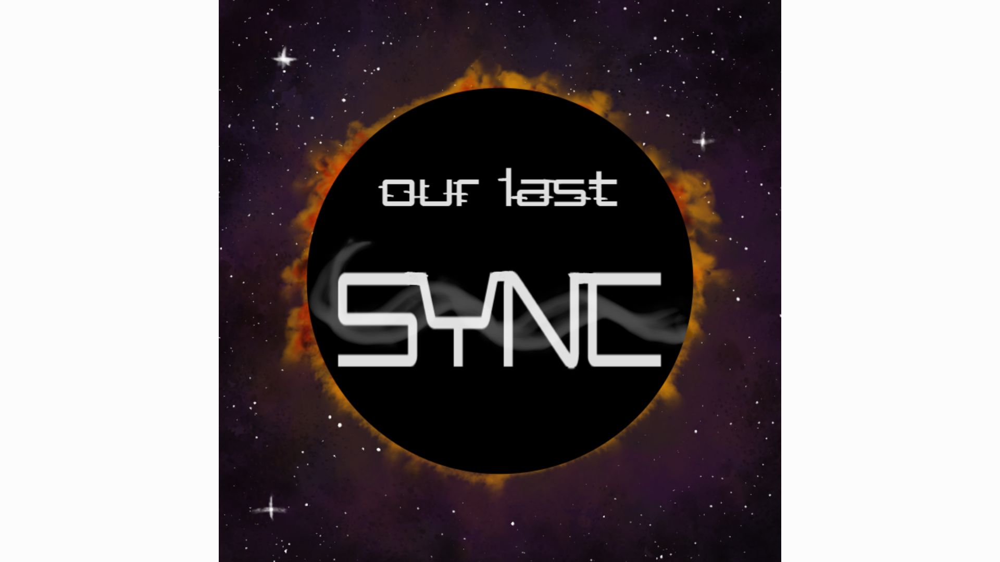

Plastic SCM
Blueprints
UE 5.4
Local multiplayer shooter for 2-4 players with split-screen gameplay. Solo programmer at first, then Lead Programmer, across two semesters as an MFA studio project.
Key Contributions:
- Built core gameplay systems: health, scoring, respawn, weapons, and match timer.
- Fixed a controller possession bug and built character selection with duplicate-prevention locking.
- Integrated motion-capture animations using Xsens.

GitHub
C++
UE 5.5
2-player online co-op puzzle game set in Egypt. Players work together to solve pressure-plate puzzles, collect keys, and open the pyramid door.
Key Contributions:
- Built puzzles that only work with two players: pressure plates, moveable boxes, key-gated doors, and moving platforms.
- Built a custom GameInstanceSubsystem in C++ for LAN and Steam session handling, with automatic detection between the two.

GitHub
Blueprints
UE 5.4
2.5D platformer where you mine data for currency and manage a shrinking health and energy economy. Solo-built and shipped, concept to release, as a fellowship project.
Key Contributions:
- Built a 4-part economy system: health, energy, money, and data, with real-time UI updates.
- Built a mining mechanic using line traces, with an energy cost per hit.

Plastic SCM
C++
UE 5.5
Our Last Sync [In Development]
2-player co-op sci-fi game about two robots piecing together what happened aboard a space station drifting toward a black hole, using paired black-hole and white-hole abilities to solve puzzles together.
Currently in solo development, continuing from a two-semester MFA studio project I created and led. Built in C++, playable locally or online, heading toward a Steam release.